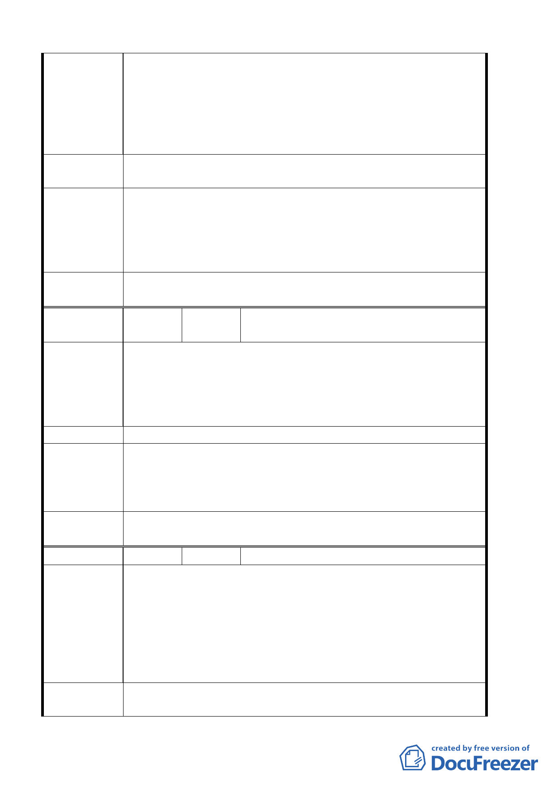

至今所得到的只有電聯車通過時之噪音（尤其晚間更甚），今祖
先所留之土地又因法規設限，而無法興屋自用，任其屋倒恒斷，
雜草叢生，雜亂不堪，且影響環境衛生；盼望至今有都市更新
計劃，容積率放寬，而受點惠，關四計劃之備註條款 2000 平方
米基地面積及回饋條款，將使計劃內之土地無法依符合條件而
受惠。
建議辦法
希望有都市更新計畫，按計畫提高容積率至住三，並廢除 2000
平方米等附帶條款要求。
93.6.10 專案小組第五次審查會議：同意發展局提案中央北路
專案小組
結論
四段沿線第一街廓變更為住三（特），退縮規定、高度限制、建
蔽率容積率依原住二規定倘開發面積達二○○○平方公尺其相
關規定比照住三惟應依「台北市土地使用分區管制規則」第八
十條之二規定，提供回饋。
委員會議
決議
同意依專案小組審查結論辦理。
編 號 ５ 陳情人 陳榮發等 29 人
建 議 位 置：（關六）、土地標示：北投區桃源五小段 307、309、
326、328、330、375、377 地號中央四段北側、一心路東側。
陳 情 理 由 建 議 理 由：原細部計劃街廓縱深為 42 米，若廢除計劃道路，
建築使用時將嚴重影響進出及建設，更無法與鄰近道路相通，
此規劃可說極為不良，民等極為反對，請仍照原規劃案配設。
建 議 辦 法 保留原有計畫道路，不予變更。
93.6.10 專案小組第五次審查會議：同意發展局提案，因坡度
專 案 小 組 過於陡峭，並經目的事業主管機關認定無開闢需要，變更為保
結 論 護區；又因位處山限區須全街廓或大面積整體開發，無無法指
示建築線問題。
委員會議
決議
同意依專案小組審查結論辦理。
編 號 ６ 陳情人 陳榮發等 29 人
建 議 位 置：（關六）、土地標示：北投區桃源段 五 小段 310、
311、312、325 地段中央北路四段北側、一心路東側。
建 議 理 由：原主要計劃兒童運動公園及國民小學用地，實
陳 情 理 由 因本里無鄰里公園與兒童就學考量。現本區受法規限制與土地
多為共同持有，至多數土地無法開發使用，本次計劃擬將原計
劃廢除，而變更為保護區，極為不妥，將嚴重影響發展，與生
活品質，民等反對，而予異議。
建議辦法
一、為顧及本里爾後發展與休閒品質，望規劃為低密度之住宅
區及鄰里公園。
第 23 頁，共 49 頁